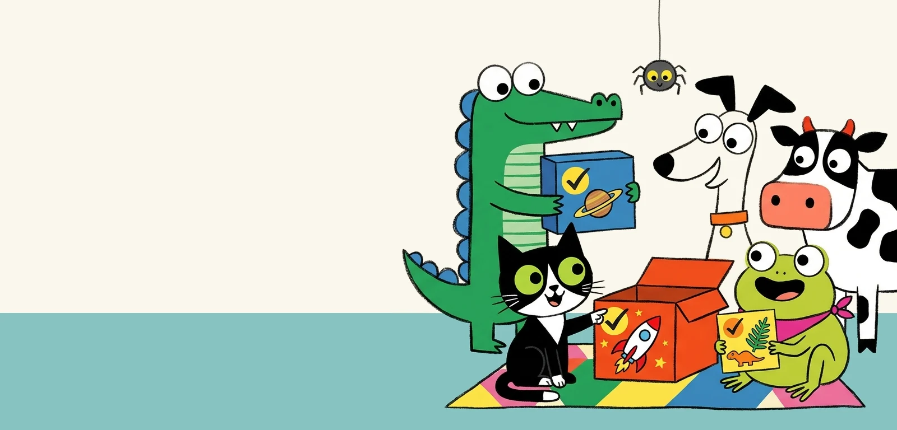
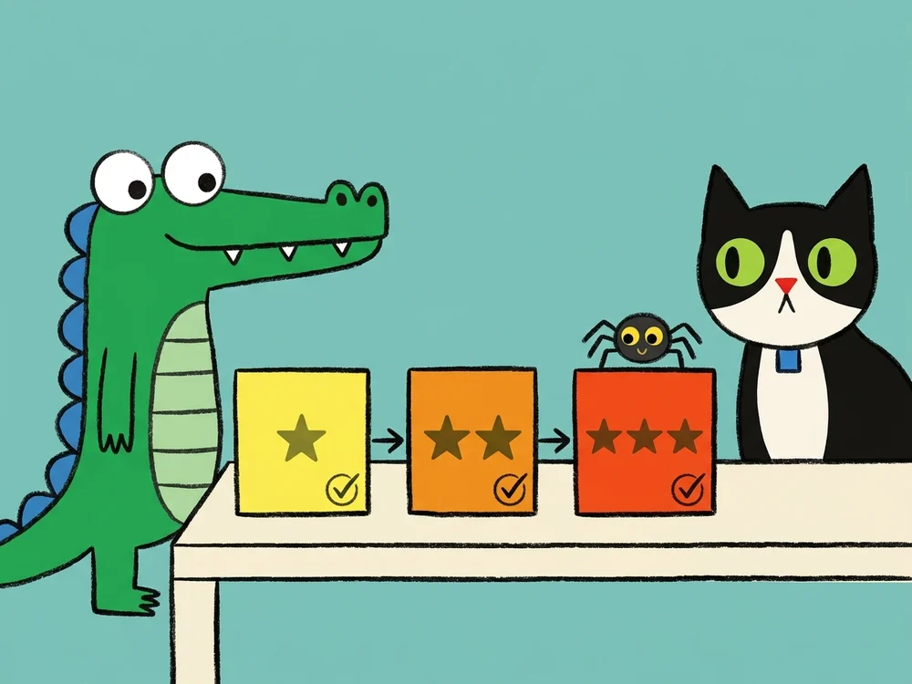
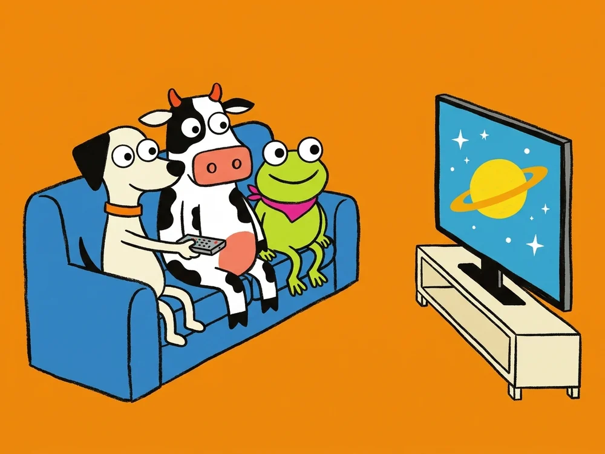
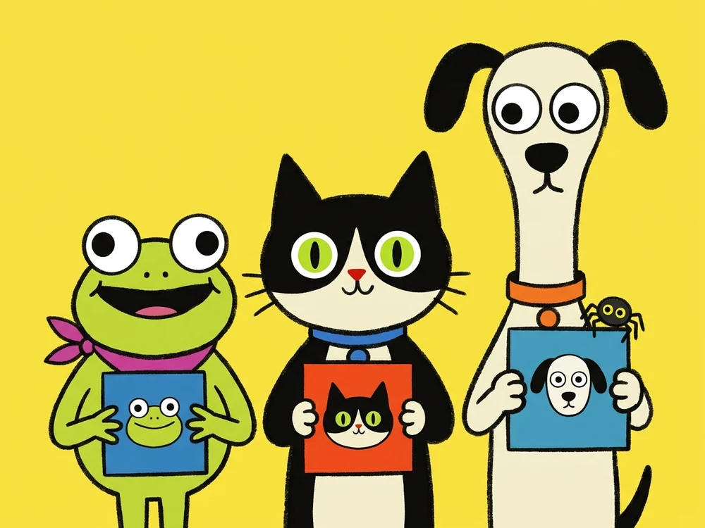

Từ YouTube
Chọn từ 100+ kênh lọc sẵn theo độ tuổi hoặc dán link kênh, danh sách phát bất kỳ.

Gom các bộ video bản quyền đã mua và kênh YouTube ba mẹ duyệt cho từng độ tuổi 2–12+ vào chung một thư viện.
Kippin là thư viện video riêng của mỗi gia đình — ba mẹ thêm nội dung gì, con ở nhà chỉ mở xem đúng nội dung đó từ 3 nguồn:
Chọn từ 100+ kênh lọc sẵn theo độ tuổi hoặc dán link kênh, danh sách phát bất kỳ.
Nhập trực tiếp thư mục video lưu trên đám mây về thư viện riêng, không lo khóa lượt xem.
Tải lên các bộ video học tập đã mua hoặc video gia đình tự quay để lưu trữ lâu dài.
Tổ chức gọn một lần cho ba mẹ, mở xem đơn giản cho con.
Video từ cả ba nguồn được gom vào thư viện riêng có ảnh bìa, chia rõ từng bộ theo Mùa và Tập để tự mở bài kế tiếp và nhớ vị trí đang xem dở. Ba mẹ cũng có thể chia sẻ riêng từng thư mục cho người thân hoặc gia đình bạn bè qua liên kết.

Cài trực tiếp trên Android TV, Google TV và iPad để con ngồi xa chọn tập bằng điều khiển. Không dùng chung ứng dụng YouTube người lớn, không cần ông bà mở máy tính hộ.

Mỗi anh chị em có hồ sơ riêng, chỉ hiển thị đúng kênh và bộ video được gán. Phụ huynh khóa cài đặt bằng mã PIN và xem lịch sử từng tập con đã mở ngay trên điện thoại.

Bấm vào từng ảnh để phóng to giao diện dành cho con và trang quản lý của ba mẹ.
Kết hợp danh mục kênh chọn lọc từ YouTube với kho lưu trữ bộ video bản quyền của gia đình trong một ứng dụng duy nhất.
| Nhu cầu thực tế | Kippin | YouTube thường | Mở từ Google Drive |
|---|---|---|---|
| Gom kênh YouTube & bộ video bản quyền đã mua |
Chung một thư viện video có ảnh bìa trực quan
|
Không tải được bộ video bản quyền lên dùng riêng | Chỉ mở file lưu sẵn, không gom được kênh YouTube |
| Phát các bộ video bản quyền đã mua |
Từng bộ chia Mùa/Tập, không nghẽn lượt xem, chia sẻ thư mục qua liên kết
|
Không có thư viện lưu trữ riêng cho gia đình | Tên file rời rạc khó chọn; hay báo lỗi vượt quá lượt xem |
| Kiểm soát thuật toán, Shorts & Quảng cáo |
100% kênh ba mẹ duyệt (100+ kênh 2–12+ tuổi), 0 Shorts, 0 quảng cáo
|
Tự gợi ý kênh lạ, luồng lướt Shorts liên tục & chèn quảng cáo | Không quảng cáo nhưng không có thư viện kênh theo độ tuổi |
| Giữ mạch tập dài kỳ |
Tự chuyển đúng tập kế tiếp cùng bộ & nhớ chính xác đoạn xem dở
|
Dễ tự chuyển sang kênh khác ngoài bộ đang học | Hết 1 file là dừng, không nhớ vị trí đang xem dở |
| Xem trên Smart TV phòng khách |
App Smart TV độc lập, bấm dễ bằng remote, không cần đăng nhập Google
|
Dùng chung app người lớn (Google đã ngừng app TV riêng từ 07/2024) | Không có thư viện chọn tập cho trẻ trên TV |
Không quảng cáo ẩn, không bán dữ liệu hành vi, không thuật toán kéo dài giờ xem.
Có 3 nguồn: chọn từ 100+ kênh YouTube lọc sẵn theo tuổi (hoặc dán link kênh, danh sách phát bất kỳ), nhập thư mục video từ Google Drive, hoặc tải file trực tiếp từ máy tính và ổ cứng.
Các file rời rạc được gom thành từng bộ có ảnh bìa chia theo Mùa và Tập, tự mở tập tiếp theo, nhớ vị trí xem dở và phát trên Smart TV không bị khóa lượt xem. Ba mẹ cũng có thể chia sẻ riêng từng thư mục cho người thân hoặc gia đình bạn bè qua liên kết.
Danh mục gợi ý có nhóm riêng cho lứa tuổi 8–10 và 11+ với nhiều kênh khoa học, vũ trụ, lịch sử, toán và hội họa như TED-Ed, Kurzgesagt, Mark Rober, Nat Geo Kids, SciShow Kids, Art for Kids Hub, VTV7... cùng bất kỳ kênh chuyên sâu nào ba mẹ tự dán link thêm.
Kippin loại bỏ luồng lướt Shorts vô tận, quảng cáo chen ngang và các đề xuất giật gân cuối video — chỉ giữ mạch tập trong bộ đang xem nên con không bị cuốn sang hàng chục video ngoài ý muốn.
Ba mẹ tải ứng dụng Kippin trên Android TV hoặc Google TV (Sony, TCL, Xiaomi, Casper, Chromecast) rồi liên kết nhanh bằng điện thoại — thư viện video của từng con sẽ đồng bộ lên TV mà không cần đăng nhập tài khoản Google cá nhân.
Không. Ô tìm kiếm trên Kippin chỉ trả kết quả nằm trong những kênh và bộ video mà ba mẹ đã gán riêng cho hồ sơ của bé đó.
Tải bộ video bản quyền của gia đình và chọn những kênh đầu tiên hợp độ tuổi của con.